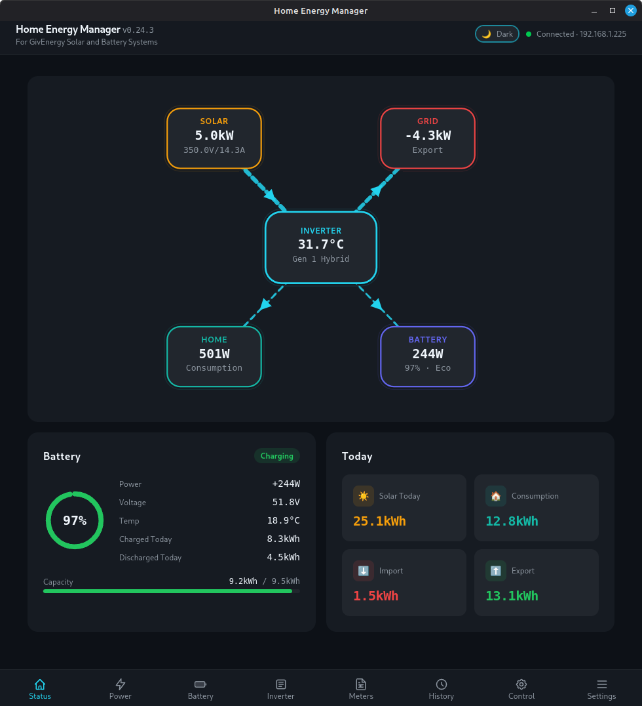
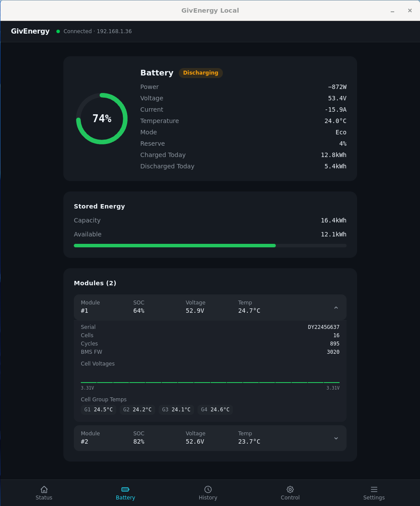
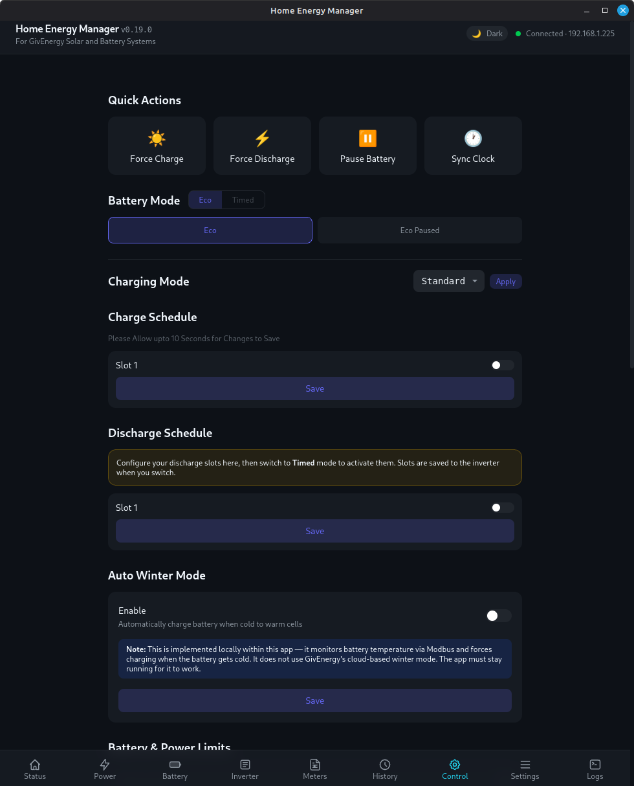
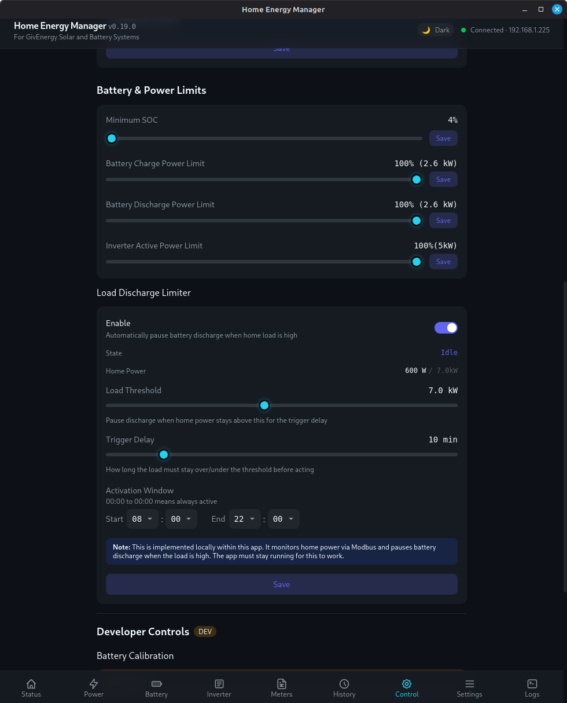
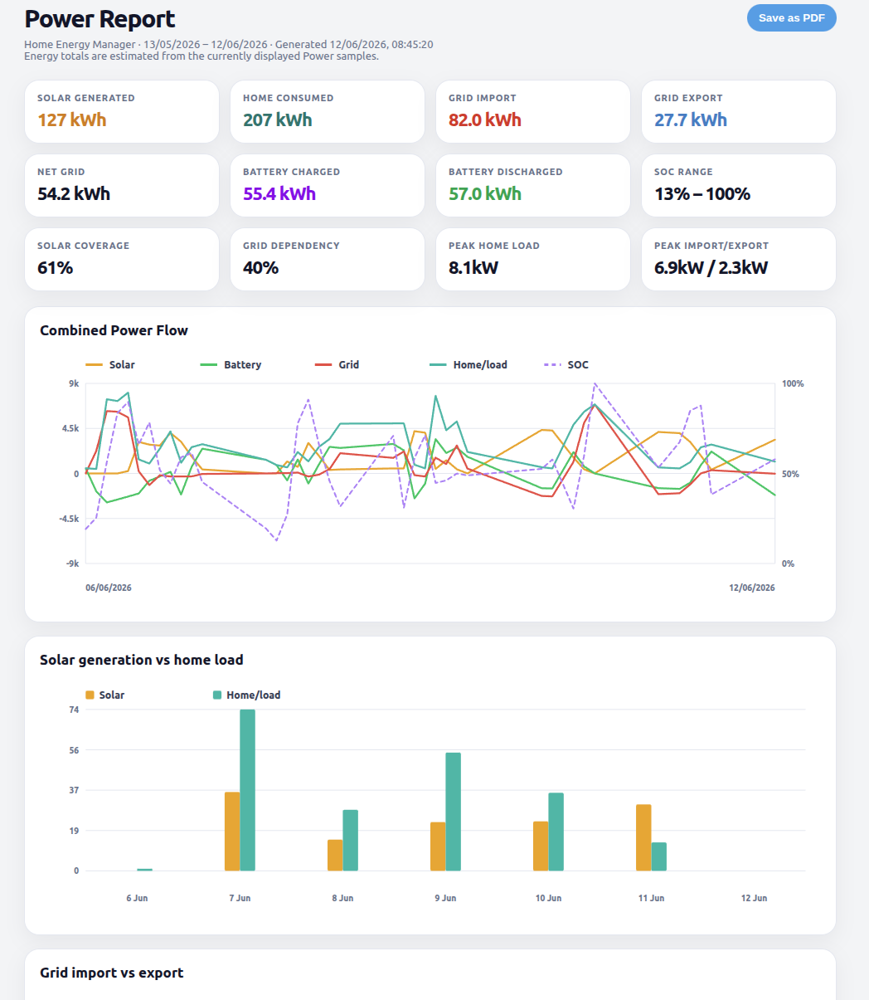
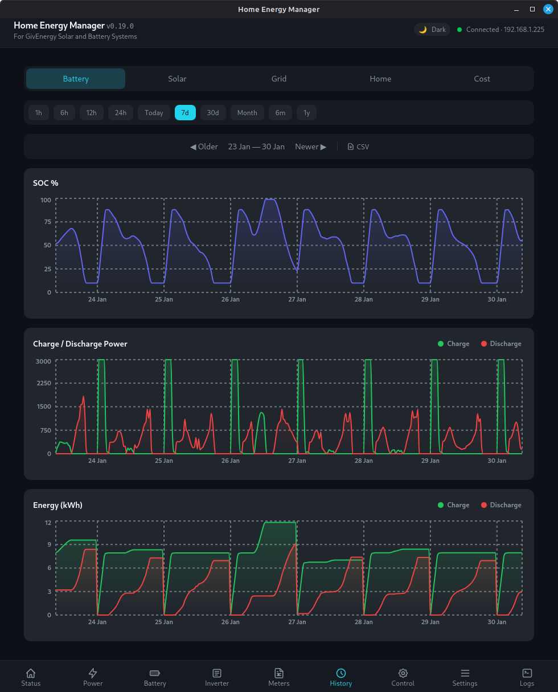
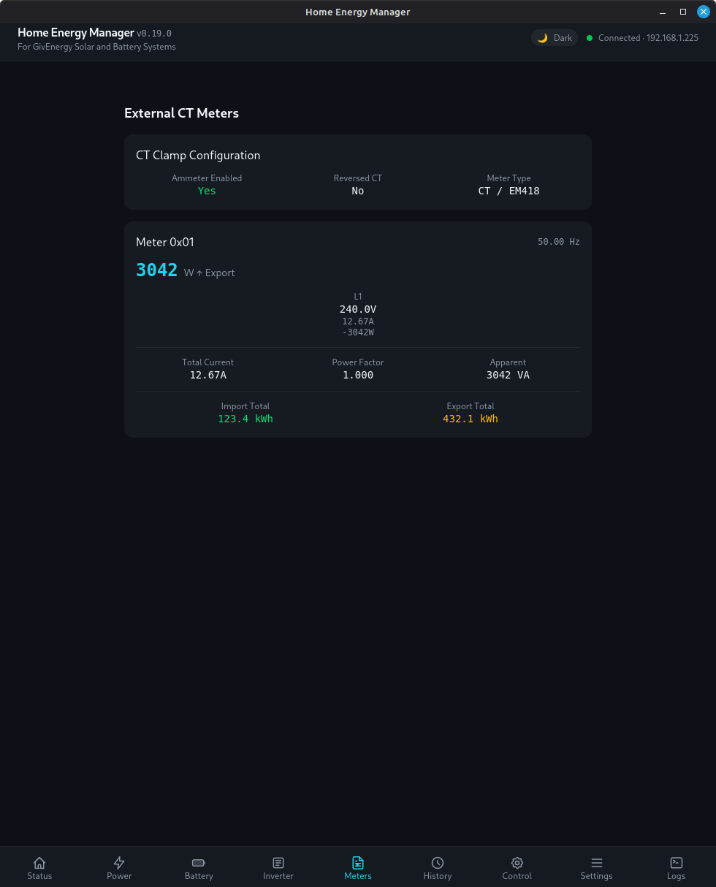
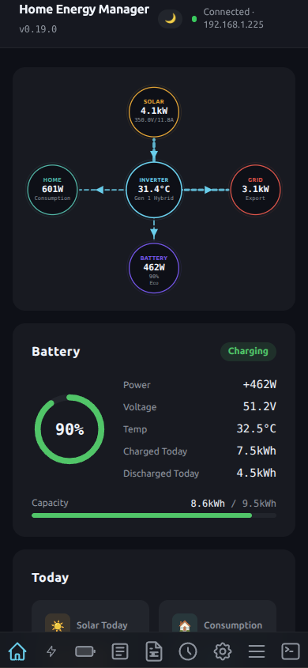

Features
Home Energy Manager talks to your GivEnergy inverter directly over your home network. Nothing here needs a GivEnergy Cloud account, and your data never leaves your network.
Real-time Dashboard
The Status page shows your whole system at a glance, updating every few seconds.
- Solar generation, battery charge level, grid import/export and home consumption, live.
- The Power page charts solar, battery, grid and home power over any range from 15 minutes to 7 days. Click a legend label to show or hide a line.
- The Inverter page lists the detected model, firmware versions, serial number, temperatures and every electrical reading.
The app reads straight from the inverter's data adapter, so there's no cloud delay. Your WiFi dongle keeps reporting to the GivEnergy cloud as it always has.

Energy Flow Diagram
An animated diagram on the Status page that shows where your power is going right now.
Solar, battery, home and grid sit around the diagram, and animated lines show power moving between them, so you can see at a glance whether the battery is charging from solar, the house is running on the grid, or you're exporting.
↑ Back to all featuresAlert Notifications
Get a message on your phone when something needs your attention, and another when it's back to normal.
- What it watches: battery temperature, inverter temperature, battery charge level, solar clipping, grid offline and battery over-temperature, each with a threshold you set.
- Where alerts go: a Telegram bot, ntfy (including self-hosted servers), Pushover, or any combination.
- A daily report of yesterday's consumption.
Telegram commands
Send these in your Telegram chat with the bot:
/status: a live snapshot of your system/today: today's cost summary/report: yesterday's full consumption report
Step-by-step setup for all three channels is in the Notification Setup Guide.
↑ Back to all featuresBattery Detail
A battery-by-battery view, down to the individual cells.
- Cell voltages and temperatures for every battery module.
- Health per module, so you can spot a weak pack early.
- A cold battery warning when the battery temperature drops near freezing, so you can protect it. Pair it with Auto Winter Mode to warm the battery automatically.
- Battery calibration can be started from the app when your battery needs it.

Charge Schedules
Choose when your battery charges from the grid and when it discharges, from the Control page.
- Up to 10 charge and 10 discharge slots on Gen 3, Gen 4, three-phase, HV Gen 3, All-in-One and Gateway systems. Gen 2 and Gen 3 Plus have 2 slots, and Gen 1 and AC Coupled have 1.
- Battery modes: Eco (automatic self-consumption), Timed Discharge (discharge or export during your slots), and Pause Discharge, which holds stored energy while still allowing solar or scheduled grid charging.
- Limits: battery reserve level, charge target, and charge and discharge power limits.

Manual Overrides
One-tap control for when you want the battery to do something right now.
- Force Charge fills the battery from the grid straight away.
- Force Discharge empties the battery to the house or grid straight away.
- Click once to start and again to stop. The two are mutually exclusive, so stop one before starting the other, and the button confirms when the inverter has taken the change.
Automatic guards
- Load Discharge Limiter pauses battery discharge while the house is drawing more than a threshold you set, such as when an EV charger is running, and restores normal Eco when the load drops. See the FAQ for suggested settings.
- Inverter Temperature Limiter pauses discharge when the inverter gets too hot and restores Eco once it cools.

PDF Consumption Reports
Formatted reports you can print or save, covering any time range you choose.
- Charts and summary tables for solar, home, grid and battery energy.
- Total energy, peak power, how much of your use solar covered, and how much you depended on the grid.
- Cost breakdowns from your tariffs.
Open Consumption Report from the Power page, then choose Print / save as PDF. Time-bucketed breakdowns can also be exported as CSV.

History & Costs
Everything the app records is kept on your machine, so you can look back at any day.
- Seven time ranges from 15 minutes to 7 days.
- Separate views for solar, home, grid and battery that share the same time range.
- Month calendar with daily energy totals for the whole month.
- Cost tracking: enter your import and export tariffs under Settings → Energy Tariffs and running cost estimates appear on your charts.
- CSV export of your history for a spreadsheet.

Planner
The Planner looks three days ahead and tells you whether tonight's cheap-rate window needs a grid charge, and how much.
Most battery owners either charge to 100% every night, paying for energy the sun would have provided, or guess. The Planner predicts tomorrow's solar and your house's usage, simulates your battery hour by hour, and works out the smallest overnight charge that keeps you off peak-rate grid power.
How it works
- Solar forecast. Live weather data from Open-Meteo (free, no account or API key needed) is turned into a 72-hour generation forecast. The app compares past forecasts with what your panels actually produced over the last two weeks, so it learns how your system really performs: its shading, orientation and real-world efficiency. Until it has about five usable days of history, the forecast is marked preliminary.
- Consumption profile. Your typical usage for each hour of the day is learned from your own history, shown with typical low and high ranges.
- Battery projection. The two are combined to simulate your battery level hour by hour. You can compare three lines: solar alone, following the plan, or leaving your current inverter schedule as it is.
- Recommendation. If the battery would drop below your Minimum battery level, the Planner recommends an overnight charge placed in your cheapest import window and sized to be the smallest charge that holds that floor.
What you'll see
- Today's recommendation: the charge to make, its time window, the lowest the battery will fall, and what the charge will cost. Press Apply to write the charge slot to your inverter.
- Automatic planning: switch it on and the app re-sizes the charge from your live battery level shortly before each cheap window (30 minutes by default, adjustable up to two hours), writes the slot itself, and sends you a notification saying what it did, or why no charge was needed.
- Export opportunities: when your export tariff pays more at certain times, the Planner shows how much you could sell from the battery, when, and what it should earn, without going below your minimum.
- Tomorrow at a glance: expected solar, house consumption, export and import for tomorrow, including the plan's charge.
Choosing a minimum battery level
The minimum is the lowest you're happy for the battery to fall before the next cheap period. A higher value keeps more in reserve for a cloudy day or a power cut. A value at or below your inverter's battery reserve means the Planner only charges when the battery would otherwise run empty and draw from the grid. Set it to 0% if you never want the Planner to charge from the grid.


Octopus Cosy (beta)
Charge your battery in every Cosy cheap-rate window without setting up schedules by hand.
Enter your three Cosy cheap-rate windows and the app charges the battery during each one, then switches back to Eco in between. If the app restarts in the middle of a cheap slot, it carries on where it left off.
The automation runs inside Home Energy Manager, so the app needs to stay running. A Raspberry Pi or always-on machine in headless mode is ideal.
↑ Back to all featuresOctopus Agile (beta)
Let the battery follow Agile's half-hourly prices.
- Enter your postcode and two price thresholds.
- When the price is below your charge threshold, the battery charges. When it's above your discharge threshold, the battery discharges. The rest of the time it stays in Eco.
- A live 24-hour price grid shows what's coming, with estimated daily savings.
As with Cosy, the app needs to stay running for the automation to work.
↑ Back to all featuresOctopus Smart-Meter Dashboard
See what Octopus has recorded from your smart meter alongside what your inverter measured.
- Add your Octopus account number and API key in Settings and the Octopus tab appears. It stays hidden until you do.
- Supplier-recorded electricity import, export and gas usage, with billing costs and monthly and yearly summaries.
- A comparison against the app's own readings, handy for checking a bill.
- Export as CSV or PDF.
Smart-meter data often reaches Octopus a day or more late and is sometimes corrected afterwards, so recent days may fill in or change.
↑ Back to all featuresAuto Winter Mode
Protects your battery from the cold by charging it from the grid when the temperature drops.
You set a temperature threshold and a target charge level. When the battery gets colder than the threshold, the app charges it from the grid, which helps keep the cells warm. It works like GivEnergy Cloud's winter mode but runs entirely on your own machine, so the app must stay running for it to work.
↑ Back to all featuresSolar Monitoring
See how each of your solar strings is performing.
The Solar page shows voltage, current and power for each string, including dual-string systems, so you can spot one string underperforming because of shading, dirt or a fault. For a forecast of what your panels will generate, see the Planner.

Meters Page
Readings from the external meters and CT clamps connected to your system.
- Voltage, current and power for each phase.
- A CT clamp status card, useful if your grid or home figures ever look wrong.
- LoRa-linked meters and slow-responding CT clamps are handled at startup, so nothing gets missed.

Access From Anywhere
Check and control your system from your phone, at home or away, without a cloud service.
- Headless server: run the app with no window on a Raspberry Pi, an always-on PC, Docker or a Proxmox container, and use it from any browser at
http://<machine-ip>:7337. Setup is in the install guide. - On your phone: open the same address in your phone's browser and use Share → Add to Home Screen for an app-like icon. The layout adapts to small screens.
- Away from home: install Tailscale (a free VPN) on the machine running the app and on your phone, then browse to its Tailscale address. You don't need port forwarding or a static IP, and the connection is encrypted end to end.
- Integrations: an optional authenticated API lets other software read your battery status and, if you allow it, use Force Charge, Force Discharge and Pause. See the Remote Battery Control API guide.
